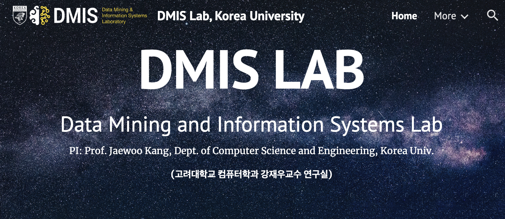

Samsung Medison AI group Intern (2025.03-2025.08)
- Computer Vision, Image Segmentation
- Data Preprocessing and Model Testing
- Python, OpenCV, CNN

Research Intern in DMIS lab (2024.06-present)
- Korea University Computer science lab. Professor Jaewoo Kang
- lab website
- research to optimize portfolio investment
- Data preprocessing and AI test runs
- Python, AI, wandb
Research assistant in USC Marshall (2024.01-2024.05)
- advised by Professor Zijun Gao
- research to detect spam reviews
- algorithm to predict restaurant number rating based on text reviews
- linear regression, lasso, xgboost
- Check my github
- R, R studio, SQL, statistics, data science